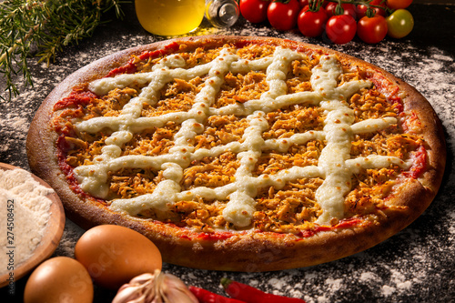

Catupiry and Chicken Pizza

How to make this delicious pizza? :))
Ingredients:
- 1 pre-made pizza crust (or you can make your own)
- 1 cup shredded cooked chicken breast
- 1 cup Catupiry cheese (or cream cheese as a substitute)
- 1/2 cup tomato sauce
- 1 cup shredded mozzarella cheese
- Fresh basil leaves (optional, for garnish)
- Salt and pepper to taste
Instructions:
- Preheat the oven as per the pizza crust package instructions.
- Roll out the pizza crust on a baking sheet or pizza stone.
- Spread tomato sauce on the crust, leaving a border around the edges.
- Sprinkle shredded cooked chicken breast over the sauce.
- Place dollops of Catupiry cheese or cream cheese on top of the chicken.
- Sprinkle shredded mozzarella cheese over the entire pizza.
- Season with salt and pepper.
- Bake the pizza in the preheated oven until cheese melts and crust turns golden brown.
- Allow the pizza to cool for a few minutes.
- Optionally, garnish with fresh basil leaves.
- Slice and serve your delicious Catupiry and Chicken Pizza.